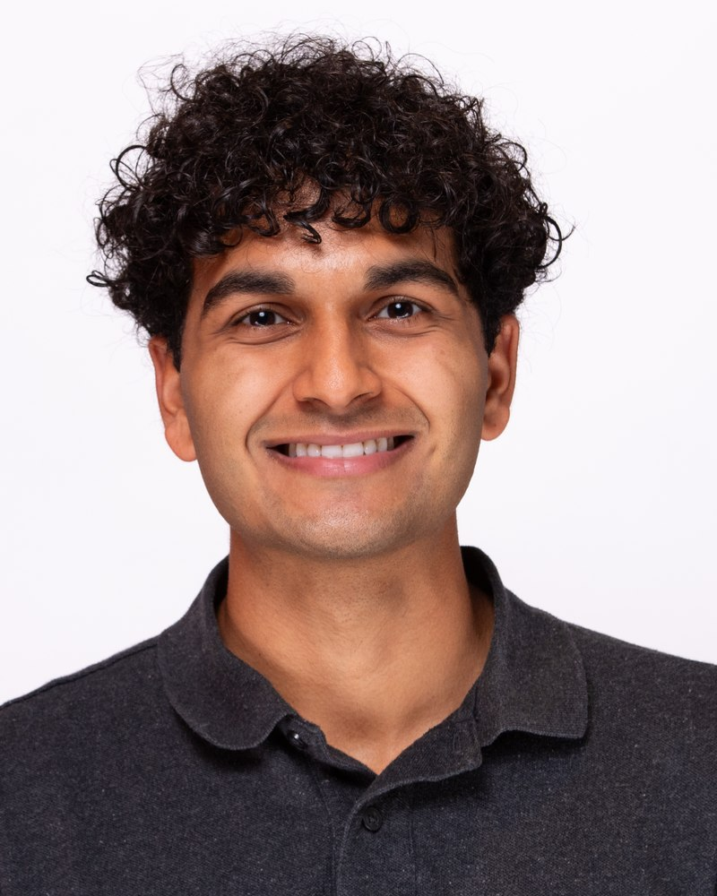
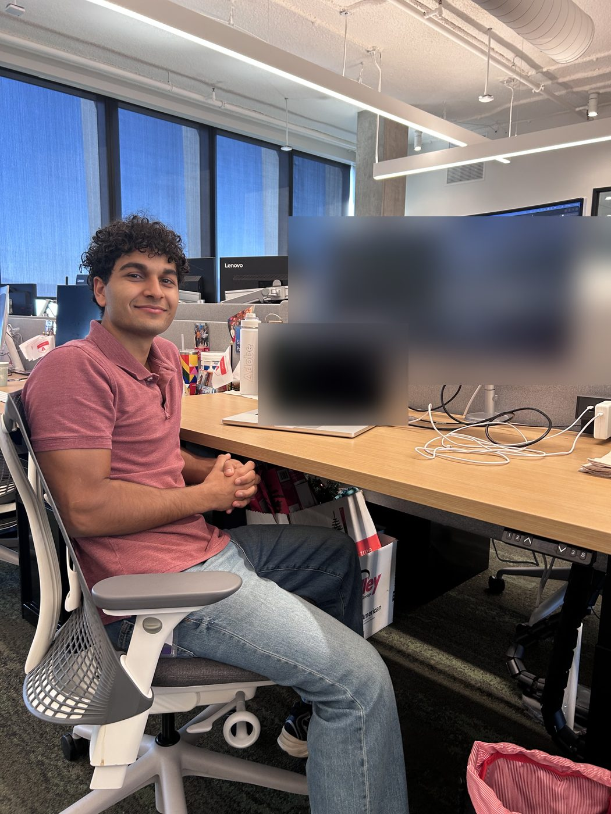

About

I'm a Computer Science student at Georgia Tech, graduating with highest honors in December 2026. I like building software that solves a real problem — right now that means interning at Adobe on the AEM Cloud Service platform, after two rotations as a software engineering co-op at Delta Air Lines working on crew systems.
Outside of internships I build my own things: ApplicationHQ, a full-stack job tracker I architected and deployed on AWS end to end; computer vision work with Georgia Tech's Electronic ARTrium research team; and a handful of earlier projects across mobile, databases, and the web.
When I'm not writing code, I'm usually at the gym, playing basketball, or exploring somewhere new — Atlanta because of Georgia Tech, and the Bay Area because of Adobe.
Experience

- Engineered a Splunk log browser for an internal AEM Cloud Service platform used by 2,000+ Adobe employees, letting support engineers query and open logs across 6 tiers without writing raw search queries.
- Fixed a production memory crash in a Scala backend by rewriting log exports to stream to disk instead of buffering multi-gigabyte files — verified by cleanly delivering 1.77GB across 6 files in 3 minutes with zero timeouts.
- Built an AI diagnostic agent that autonomously analyzes AEM thread dumps and Splunk logs to identify the root cause of pipeline failures.
- Led the transition of 70+ ALPA iCrew Admin users from shared logins to individual, role-based credentials, strengthening IT policy compliance across internal crew systems.
- Designed a scalable Delta–ALPA data transfer system exposing Oracle database views through a REST API, replacing a manual process and improving data availability for 500+ pilot scheduling users.
- Directed a team of 12 developers building a MERN-stack Lost & Found app for GT campus students.
- Launched Roomify AI, generating room layout and color suggestions from photos, tested by 150+ students.
- Prototyped L3Harris-sponsored robot dog features using CNN-based image and audio recognition for real-time perception and K-12 STEM outreach demos.
- Built a MySQL schema and Python pipeline to track progress via barcode scans, plus LIDAR-based occupancy sensing for a 4-section exhibit attended by 1,200+ visitors.
- Built a YOLOv5 object detection pipeline trained on 1,000+ labeled tool images, reducing manual inventory checks by 75%.
- Automated E3D Toolchanger head movements with Klipper G-code macros to cut delays from filament swaps.
Selected work
A full-stack job tracker I architected and deployed on AWS — a Next.js / React / TypeScript frontend, a Java Spring Boot REST API, and a PostgreSQL database, secured with Clerk authentication.
- Recruiting dashboard. Tracks applications across all 7 pipeline stages.
- Owner-scoped data. Clerk auth verifies every request; users see only their own applications.
- Full-stack. Next.js / React / TypeScript talking to a Java Spring Boot REST API.
- Deployed on AWS. Backed by PostgreSQL, built and shipped end to end.
Every application moves through this 7-stage model — the goal state is OFFER.
An AI product generating room layout and color suggestions from photos, tested by 150+ students.
A trip-planning app storing 600+ Firebase entries synced live across collaborators, with a travel community feature.
A normalized MySQL database — 21 stored procedures, 6 views — for a delivery logistics platform, with a React frontend.
Skills
Education
Get in touch
Graduating from Georgia Tech in December 2026 and open to full-time software engineering roles starting January 2027. Always happy to talk backend, full-stack, or AI-focused engineering.